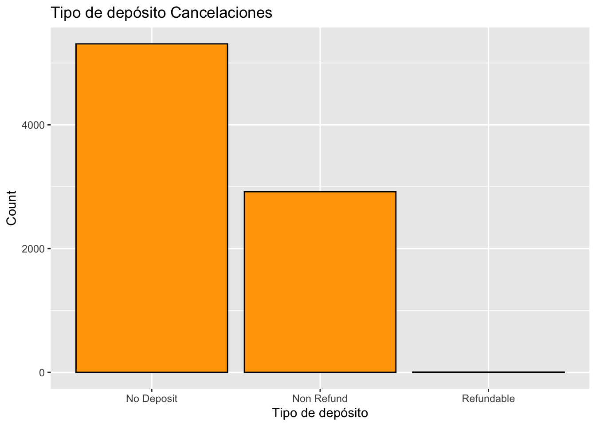

Capitulo 2 Analisis Exploratorio de Datos
Con el fin de entender los datos realizamos una revisión general de estos (solamente de la base de datos de entrenamiento posterior a haberla dividido en entrenamiento, validación y prueba) y tratamos de identificar aquellas variables que pudieran ser interesantes para nuestro estudio. A continuación se muestra una breve parte de la exploración de datos. Si desea consultar el análisis completo puede encontrarlo en la siguiente liga EDA.
El data set está compuesto por las siguientes variables:
| Variable | Tipo | Descripción |
|---|---|---|
| ADR | Numeric | Tarifa diaria promedio definida por [5] |
| Adults | Integer | Número de Adultos |
| Agent | Categorical | DNI de la agencia de viajes que realizó la reservaa |
| ArrivalDateDayOfMonth | Integer | Día del mes de la fecha de llegada |
| ArrivalDateMonth | Categorical | Mes de la fecha de llegada con 12 categorías: “enero” a “diciembre” |
| ArrivalDateWeekNumber | Integer | Número de semana de la fecha de llegada |
| ArrivalDateYear | Integer | Año de la fecha de llegada |
| AssignedRoomType | Categorical | Código del tipo de habitación asignada a la reserva. A veces, el tipo de habitación asignada difiere del tipo de habitación reservada debido a razones de operación del hotel (por ejemplo, overbooking) o por solicitud del cliente. El código se presenta en lugar de la designación por razones de anonimato |
| Babies | Integer | Numero de bebes |
| BookingChanges | Integer | Número de cambios / modificaciones realizadas a la reserva desde el momento en que se ingresó la reserva en el PMS hasta el momento del check-in o la cancelación |
| Children | Integer | Numero de niños |
| Company | Categorical | DNI de la empresa / entidad que realizó la reserva o responsable del pago de la reserva. La identificación se presenta en lugar de la designación por razones de anonimato |
| Country | Categorical | País de origen. Las categorías están representadas en el formato ISO 3155-3: 2013 [6] |
| CustomerType | Categorical | Tipo de reserva, asumiendo una de cuatro categorías: |
| DaysInWaitingList | Integer | Número de días que la reserva estuvo en lista de espera antes de que fuera confirmada al cliente |
| DepositType | Categorical | Indicación sobre si el cliente realizó un depósito para garantizar la reserva. Esta variable puede asumir tres categorías: |
| DistributionChannel | Categorical | Canal de distribución de reservas. El término “TA” significa “Agentes de viajes” y “TO” significa “Operadores turísticos” |
| IsCanceled | Categorical | Valor que indica si la reserva fue cancelada (1) o no (0) |
| IsRepeatedGuest | Categorical | Valor que indica si el nombre de la reserva fue de un huésped repetido (1) o no (0) |
| LeadTime | Integer | Número de días transcurridos entre la fecha de entrada de la reserva en el PMS y la fecha de llegada |
| MarketSegment | Categorical | Designación de segmento de mercado. En las categorías, el término “TA” significa “Agentes de viajes” y “TO” significa “Operadores turísticos” |
| Meal | Categorical | Tipo de comida reservada. Las categorías se presentan en paquetes de comidas de hospitalidad estándar: |
| PreviousBookingsNotCanceled | Integer | Número de reservas anteriores no canceladas por el cliente antes de la reserva actual |
| PreviousCancellations | Integer | Número de reservas anteriores que fueron canceladas por el cliente antes de la reserva actual |
| RequiredCardParkingSpaces | Integer | Número de plazas de aparcamiento requeridas por el cliente |
| ReservationStatus | Categorical | Último estado de la reserva, asumiendo una de tres categorías: |
| ReservationStatusDate | Date | Fecha en la que se estableció el último estado. Esta variable se puede utilizar junto con ReservationStatus para comprender cuándo se canceló la reserva o cuándo se registró el cliente en el hotel. |
| ReservedRoomType | Categorical | Código del tipo de habitación reservado. El código se presenta en lugar de la designación por razones de anonimato |
| StaysInWeekendNights | Integer | Número de noches de fin de semana (sábado o domingo) que el huésped se hospedó o reservó para alojarse en el hotel |
| StaysInWeekNights | Integer | Número de noches de la semana (de lunes a viernes) que el huésped se hospedó o reservó para alojarse en el hotel |
| TotalOfSpecialRequests | Integer | Número de solicitudes especiales realizadas por el cliente (por ejemplo, dos camas individuales o piso alto) |
Nuestra variable de interés es IsCanceled la cual toma valores de 1 (fue cancelada) y 0 (no fue cancelada). Así que primero veamos la proporción de cancelaciones en los datos.
| Cancelado | No cancelado |
|---|---|
| 0.3620854 | 0.6379146 |
Usamos la función skim en la base de datos de entrenamiento para conocer las características generales de cada variable.
| Name | data |
| Number of rows | 91531 |
| Number of columns | 30 |
| _______________________ | |
| Column type frequency: | |
| character | 13 |
| numeric | 17 |
| ________________________ | |
| Group variables | None |
Variable type: character
| skim_variable | n_missing | complete_rate | min | max | empty | n_unique | whitespace |
|---|---|---|---|---|---|---|---|
| hotel | 0 | 1 | 10 | 12 | 0 | 2 | 0 |
| is_canceled | 0 | 1 | 9 | 12 | 0 | 2 | 0 |
| arrival_date_month | 0 | 1 | 3 | 9 | 0 | 12 | 0 |
| meal | 0 | 1 | 2 | 9 | 0 | 5 | 0 |
| country | 0 | 1 | 2 | 4 | 0 | 164 | 0 |
| market_segment | 0 | 1 | 6 | 13 | 0 | 8 | 0 |
| distribution_channel | 0 | 1 | 3 | 9 | 0 | 5 | 0 |
| reserved_room_type | 0 | 1 | 1 | 1 | 0 | 10 | 0 |
| assigned_room_type | 0 | 1 | 1 | 1 | 0 | 12 | 0 |
| deposit_type | 0 | 1 | 10 | 10 | 0 | 3 | 0 |
| agent | 0 | 1 | 1 | 4 | 0 | 302 | 0 |
| company | 0 | 1 | 1 | 4 | 0 | 329 | 0 |
| customer_type | 0 | 1 | 5 | 15 | 0 | 4 | 0 |
Variable type: numeric
| skim_variable | n_missing | complete_rate | mean | sd | p0 | p25 | p50 | p75 | p100 | hist |
|---|---|---|---|---|---|---|---|---|---|---|
| lead_time | 0 | 1 | 96.29 | 105.45 | 0.00 | 15 | 58.0 | 145 | 737 | ▇▂▁▁▁ |
| arrival_date_year | 0 | 1 | 2015.90 | 0.61 | 2015.00 | 2016 | 2016.0 | 2016 | 2017 | ▃▁▇▁▂ |
| arrival_date_week_number | 0 | 1 | 28.18 | 15.01 | 1.00 | 13 | 31.0 | 41 | 53 | ▆▅▆▇▆ |
| arrival_date_day_of_month | 0 | 1 | 15.81 | 8.76 | 1.00 | 8 | 16.0 | 23 | 31 | ▇▇▇▇▆ |
| stays_in_weekend_nights | 0 | 1 | 0.90 | 1.00 | 0.00 | 0 | 1.0 | 2 | 19 | ▇▁▁▁▁ |
| stays_in_week_nights | 0 | 1 | 2.45 | 1.94 | 0.00 | 1 | 2.0 | 3 | 50 | ▇▁▁▁▁ |
| adults | 0 | 1 | 1.84 | 0.61 | 0.00 | 2 | 2.0 | 2 | 55 | ▇▁▁▁▁ |
| children | 4 | 1 | 0.09 | 0.37 | 0.00 | 0 | 0.0 | 0 | 10 | ▇▁▁▁▁ |
| babies | 0 | 1 | 0.01 | 0.10 | 0.00 | 0 | 0.0 | 0 | 10 | ▇▁▁▁▁ |
| is_repeated_guest | 0 | 1 | 0.03 | 0.18 | 0.00 | 0 | 0.0 | 0 | 1 | ▇▁▁▁▁ |
| previous_cancellations | 0 | 1 | 0.11 | 0.96 | 0.00 | 0 | 0.0 | 0 | 26 | ▇▁▁▁▁ |
| previous_bookings_not_canceled | 0 | 1 | 0.13 | 1.40 | 0.00 | 0 | 0.0 | 0 | 61 | ▇▁▁▁▁ |
| booking_changes | 0 | 1 | 0.21 | 0.64 | 0.00 | 0 | 0.0 | 0 | 21 | ▇▁▁▁▁ |
| days_in_waiting_list | 0 | 1 | 2.96 | 19.93 | 0.00 | 0 | 0.0 | 0 | 391 | ▇▁▁▁▁ |
| adr | 0 | 1 | 92.81 | 46.72 | -6.38 | 65 | 86.4 | 114 | 5400 | ▇▁▁▁▁ |
| required_car_parking_spaces | 0 | 1 | 0.07 | 0.25 | 0.00 | 0 | 0.0 | 0 | 8 | ▇▁▁▁▁ |
| total_of_special_requests | 0 | 1 | 0.53 | 0.77 | 0.00 | 0 | 0.0 | 1 | 5 | ▇▁▁▁▁ |
Podemos observar que:
Tenemos 13 variables categorías, de las cuales podemos destacar que 3 tienen un número alto de categorías (country, agent, company).
Tenemos 17 variables numéricas.
En este primer acercamiento, podemos identificar que las variables corresponden a:
Variables de tiempo: tiempo previo de reservación, fechas de llegada, duración de la reservación.
Características de reservación: agencia, país, canal de distribución, segmento de mercado, tipo de depósito, tarifa diaria
Características de los clientes y sus preferencias: adultos, bebes, tipo de hotel, tipo de habitación
2.0.1 Cancelaciones EDA
Ahora extraemos el subconjunto de cancelados para hacer una revisión de todas las variables con respecto a las reservaciónes canceladas.
sub_cancelados <- subset(train, is_canceled == "cancelado")Iniciamos con la revisión de los histogramas de cada variable para ver si podemos identificar algun compartamiento interesante. A continuación se muestran los histogramas de las variables más interesantes a nuestro criterio, nuevamente puede consultar la exploración completa de los datos en EDA.
Lead_time: la distribución de sus datos no tiene un comportamiento lógico, porque el mayor número de cancelaciones proviene de o días previos de reservación, pero luego se mueve a valores de 90 días, 40 días y luego regresa a 2 días. será importante ver si existe algún patrón en esta variable.
Agregar comparacion poblaciones ########################################## #################################################
Country: esta variable presenta un dato totalmente atípico en la categoría PRT por lo que es importante considerarla ya que podría explicar una porción importante de las cancelaciones.
#
Deposit_type: aqui hay otro caso ilógico, ya que la categoría de no rembolsable está muy por arriba de los rembolsable, uno pensaría que debería ser menos frecuenta la cancelación si no te van a devolver tu dinero. por lo que es otra variable importante.

Analisando la variable deposit_type, se extrae el subset de deposit_type cancelados. Revisamos los porcentajes de cada categoría en las otras variables y observamos que el 97% de las cancelaciones sin rembolso pertenecen al país PRT.
##
## BEL CN ESP FRA GBR NULL
## 0.001370802 0.000685401 0.010281014 0.001028101 0.010966415 0.002398903
## POL PRT
## 0.002056203 0.971213160Joel añadir descubrimientos agent 1 portugal discucsión
2.0.2 Análisis de tendenciás en el tiempo EDA
Para analizar tendencias de cancelación en el timepo se agrupan las cancelaciones por fecha.
Se procede a hacer un análisis de series de tiempo.
Joel Analisis días de la semana
Joel Picos durante el año